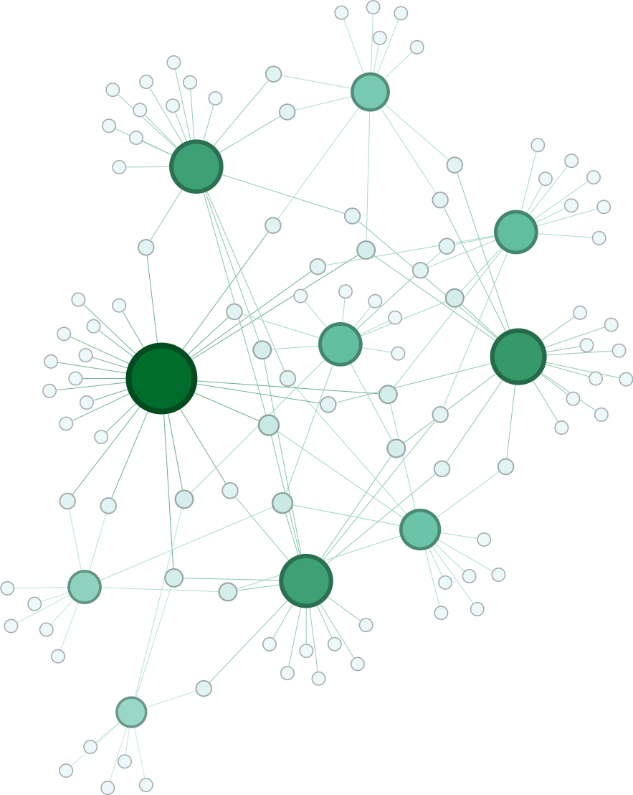

Gephi
Here I have taken a two custom datasets segregated into nodes and edges. I have then used the two Gephi plugins such as GeoLayout and Multimode Networks Transformation along with the in built Gephi tools to construct two network visualizations. The visualization has 2 parts:

Part 1: 1-mode network (1.000 nodes/14.116 edges)

Part 2: 2-mode network (110 nodes/142 edges)